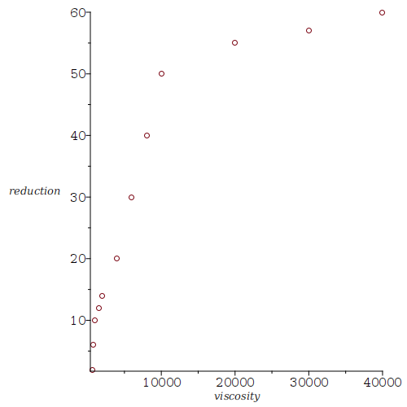
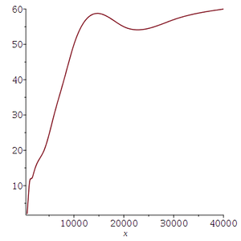
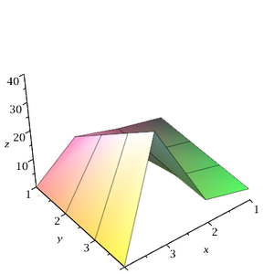

Ce document explique comment manipuler des ensembles de données; en particulier si nous voulons analyser une grande quantité de données qui se trouvent dans un fichier.
Les deux fonctions de base sont readdata() et writedata().
Supposons que nous avons un fichier qui contient les lignes suivantes.
1 2 3 4 5 6 7 8 10 20 30 40 0.5 0.3 1.1 1.6
Pour lire le fichier data1.txt, nous utilisons la fonction readdata(). Le deuxième argument (i.e. 4) de la commande ci-dessous est le nombre de valeurs par ligne qui doit être lu. Il n'est pas nécessaire que ce soit le nombre de valeurs par ligne dans le fichier. Nous pouvons lire moins de valeurs par ligne qu'il y a de valeurs par ligne dans le fichier. Par défaut, il est assumé que la représentation en virgule flottante (float) est utilisée pour exprimer les données dans le fichier.
> A:=readdata(`data1.txt`,4);\[ A := [[1., 2., 3., 4.], [5., 6., 7., 8.], [10., 20., 30., 40.], [0.5, 0.3, 1.1, 1.6]] \]
A n'est pas une matrice ni un tableau. C'est une liste. Par contre, les liste peuvent être converti en des matrices à l'aide de la fonction convert() de Maple.
> B:=convert(A,'Matrix');\[ \begin{bmatrix}1. & 2. & 3. & 4. \\ 5. & 6. & 7. & 8. \\ 10. & 20. & 30. & 40. \\ 0.5 & 0.3 & 1.1 & 1.6 \end{bmatrix} \]
Si nous lisons le fichier data1.txt en assumant que les données sont des entiers, alors nous obtenons le résultat suivant.
> C:=readdata(`data1.txt`,integer,4); E := convert(C, 'Matrix')\[ \begin{split} & C := [[1, 2, 3, 4], [5, 6, 7, 8], [10, 20, 30, 40], [0]] \\ & E := \begin{bmatrix} 1 & 2 & 3 & 4 \\ 5 & 6 & 7 & 8 \\ 10 & 20 & 30 & 40 \\ 0 & 0 & 0 & 0\end{bmatrix} \end{split} \]
Comme nous pouvons voir, Maple n'a pas lu les nombres qui n'étaient pas des entiers. Maple n'a même pas tronqué ou arrondi les nombres qui n'étaient pas des entiers.
Nous considérons le tableau suivant.
> A := array([ [1,-1,1],[2,-2,3], [-3,-2,-1],[0,0,1]]);\[ A := \begin{pmatrix} 1 & -1 & 1 \\ 2 & -2 & 3 \\ -3 & -2 & -1 \\ 0 & 0 & 1 \end{pmatrix} \]
Pour sauvegarder le tableau A dans le fichier data2.txt, il suffit d'utiliser la fonction writedata().
> writedata("data2.txt",A,float);
Note: Les objets Matrix et Vector dans Maple ne peuvent pas être utilisés par la fonction writedate(). Par contre, nous pouvons utiliser les objets array, list, ...
Exemple: Le fichier contient les lignes suivantes.
600 800 1000 1500 2000 4000 6000 8000 10000 20000 30000 40000 2 6 10 12 14 20 30 40 50 55 57 60
La première ligne contient différentes viscosités et la deuxième ligne contient les pourcentages de réduction de la vitesse de pompage qui correspond aux différentes viscosités de la première ligne. Nous commençons par lire les données dans le fichier data3.txt.
> pData:=readdata(`data3.txt`,12);\[ \begin{split} & pData := [[600., 800., 1000., 1500., 2000., 4000., 6000., 8000., 10000., 20000., \\ &\qquad \qquad 30000., 40000.], [2., 6., 10., 12., 14., 20., 30., 40., 50., 55., 57., 60.]] \end{split} \]
Nous utilisons la fonction plot() de Maple pour tracer la réduction en pourcentage de la vitesse de pompage en fonction de la viscosité. À cette fin, nous devons créer une liste de points de la forme \([[x_1,y_1],[x_2,y_2],...]\) que nous fournissons comme argument à la fonction plot().
> plist:=[seq([pData[1][i],pData[2][i]],i=1..12)];\[ \begin{split} & plist := [[600., 2.], [800., 6.], [1000., 10.], [1500., 12.], [2000., 14.], [4000., 20.], \\ & \qquad \qquad [6000., 30.], [8000., 40.], [10000., 50.], [20000., 55.], [30000., 57.], [40000., 60.]] \end{split} \]
> plot( plist, style=POINT, symbol=circle,labels=['viscosity','reduction']);

Nous pouvons utiliser un spline
pour obtenir une
approximation de la fonction qui décrit la réduction en pourcentage de
la vitesse de pompage en fonction de la viscosité. Pour utiliser la
fonction spline() de Maple, nous
devons transformer la liste pData en une
Matrix où les viscosités sont dans la
première colonne et les réductions en pourcentage de la vitesse de
pompage sont dans la deuxième colonne.
> with(LinearAlgebra): > ptData := Transpose( convert(pData,'Matrix') );\[ ptData := \begin{bmatrix} 12 x 2 Matrix \\ Data Type: anything \\ Storage: rectangular\\ Order: Fortran\_order \end{bmatrix} \]
Quand la matrice est trop grande pour être affichée (selon Maple), nous obtenons seulement une description de la matrice. Entre autre, Maple nous dit que la matrice est de dimensions \(12 \times 2\).
Nous définissons ci-dessous l'interpolation des données à l'aide
d'un spline
qui passe par tous les points de notre
ensemble de données et nous traçons le graphe de ce
spline
.
> pSpline:= x-> spline(Column(ptData,1), Column(ptData,2), x, cubic): > plot(pSpline(x),x=600..40000);

Nous admettons que l'interpolation à l'aide d'un spline
n'est probablement pas le bon outil pour s'ajuster aux données car le
graphe n'est pas partout strictement croissant comme il se devrait.
Exemple: Les composantes d'une matrice \(A\) de dimensions \(n\times n\) peuvent être interprétées comme étant les valeurs d'une fonction définie sur l'ensemble \(\{ (i,j) : 1 \leq i, j \leq n \}\); c'est-à-dire, \((i,j) \mapsto A(i,j)\). Nous considérons les données qui se trouvent dans le fichier data1.txt.
> A:=readdata(`data1.txt`,4);\[ A := [[1., 2., 3., 4.], [5., 6., 7., 8.], [10., 20., 30., 40.], [0.5, 0.3, 1.1, 1.6]] \]
Nous définissons ci-dessous la liste de points
\[ [ [ [1,1,A(1,1)],...[1,4,A(1,4)] ] , [ [2,1,A(2,1)],...[2,4,A(2,4)] ], ..., [ [4,1,A(4,1)],...[4,4,A(4,4)] ] ] \]qui est donnée comme argument à la fonction surfdata() qui se trouve dans la librairie plots de Maple.
> Alist:=[seq( [seq([i,j,A[i][j]],j=1..4)] , i=1..4)];\[ \begin{split} & Alist := [[[1, 1, 1.], [1, 2, 2.], [1, 3, 3.], [1, 4, 4.]], [[2, 1, 5.], [2, 2, 6.], [2, 3, 7.],\\ & [2, 4, 8.]], [[3, 1, 10.], [3, 2, 20.], [3, 3, 30.], [3, 4, 40.]], [[4, 1, 0.5], [4, 2, 0.3], \\ & [4, 3, 1.1], [4, 4, 1.6]]] \end{split} \]
> with(plots): > surfdata(Alist, axes=frame, labels=[x,y,z]);
